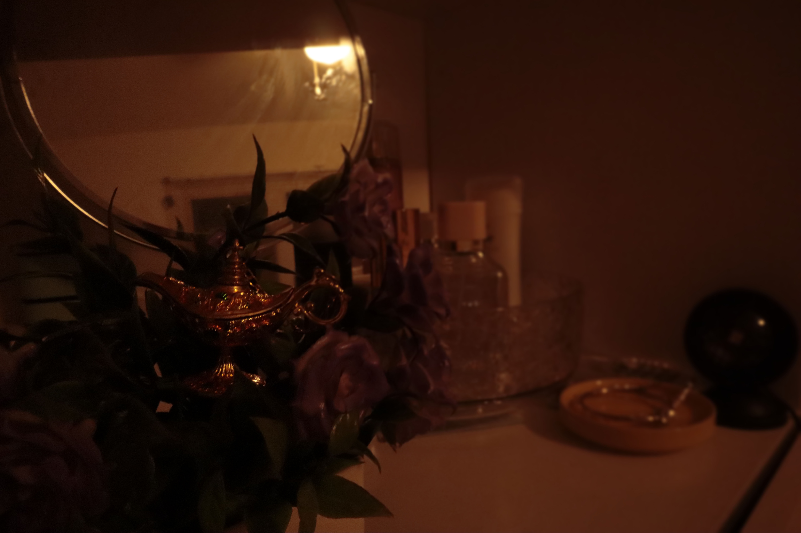
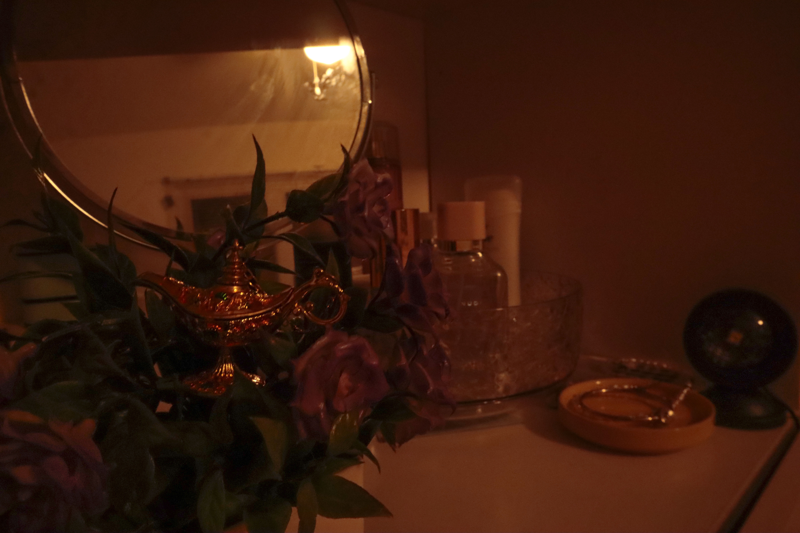

Homework 3: Depth of Field
For Homework 3, I posted 4 JPG images total on this single page (homework3.html): a shallow depth of field photo, a deep depth of field photo, a Photoshop blur version, and the original image used for the blur comparison. All images are under 2 MB and saved in the images folder.
1 & 2: In-camera shallow vs. deep depth of field
| 📷 Shallow DoF | 📷 Deep DoF |
|---|---|
|
 Settings: f/3.5, 1/5s, ISO 200. Subject is sharp and background is blurred. |

Settings: f/14, 1/15s, ISO 3200. Foreground and background appear sharp. |
3 & 4: Photoshop blur vs. original image (comparison)
| 🎨 Photoshop Blur (Blur Gallery) | 📸 Original |
|---|---|

I used Filter > Blur Gallery > Field Blur to blur the background while keeping the subject sharp. |
 This is the original image before applying the Blur Gallery filter. |
Reflection
For this assignment, I photographed a still-life scene on a vanity table, featuring a decorative lamp, flowers, a mirror, and personal objects. I chose this subject because it allowed me to clearly see how depth of field affects the relationship between the main subject and the surrounding environment. The setting was indoors with warm, low light, which also made exposure adjustments important.
To compare shallow and deep depth of field, I took two photographs with the same composition but different aperture settings. For the shallow depth of field image, I used a wide aperture (around f/2.8), which resulted in the foreground subject appearing sharp while the background became soft and blurred. This created a more intimate and dreamy feeling, drawing attention to the decorative lamp and flowers. For the deep depth of field image, I used a smaller aperture (around f/11), which kept both the foreground and background in focus, allowing the viewer to see more details of the entire scene.
I used the deep depth of field image as my base image for editing. First, I applied the Camera Raw Filter to adjust exposure, contrast, highlights, and shadows. I also checked clipping warnings to avoid losing detail in the highlights and shadows, and used the straighten tool to ensure the image was properly aligned. These adjustments helped balance the image while maintaining its warm atmosphere.
After that, I used Filter > Blur Gallery > Field Blur to create an artificial shallow depth of field. By selectively blurring the background and keeping the main subject sharp, I was able to simulate the effect of a wide aperture digitally. Through this process, I learned how aperture affects depth of field in-camera and how Photoshop tools can be used to recreate similar visual effects intentionally.